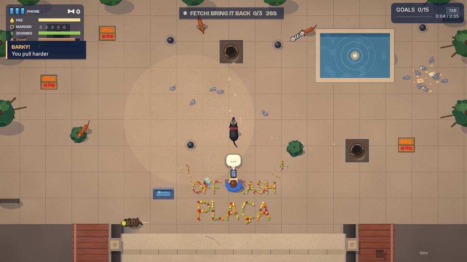

El Mercat
The market hall at opening time
A covered iron market hall modeled on La Boqueria, noisy with stacked fruit stalls, glistening fish counters, delivery crates and shoppers stopping mid-aisle without warning. Keep your footing past the wet ice puddles if you want to haul a crate of oranges across the hall.
- Off-leash stop
- PLAÇA (Open plaça)
- Beat the clock
- Under 2:55
Screenshots



Goals (15)
- Mark 5 spots
- Have 4 good long sniffs
- Get the phone home without a scratch
- Get yourself home without a bump
- Get your business bagged
- Bring the ball back 3 times
- Bring Tofu the cat home
- Scarf down 2 dropped snacks
- Run yourself tired
- Run the oranges to the far stall
- Land an x3 trick combo
- Grab the churro off the wet floor
- Spell LEASH
- Find the hidden pernil
- Beat the clock (under 2:55)